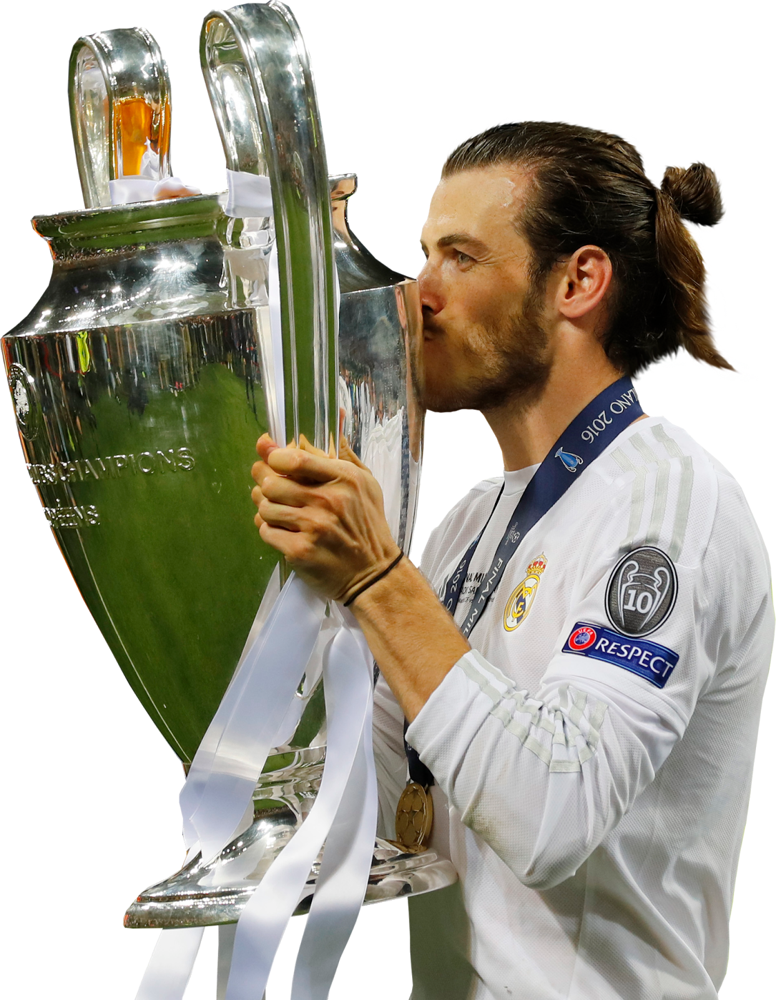

Gareth Bale is a retired Welsh professional footballer, widely regarded as one of the best wingers of his generation. Born on July 16, 1989, in Cardiff, Wales, he gained fame for his incredible speed, dribbling, powerful left foot, and ability to score stunning goals from long range.
Career Highlights:
• Southampton (2006–2007) – Started his professional career as a left-back.
• Tottenham Hotspur (2007–2013, 2020–2021) – Developed into a world-class winger, winning the PFA Player of the Year award twice.
• Real Madrid (2013–2022) – Won five UEFA Champions League titles and played a key role in major victories, including his famous bicycle kick goal in the 2018 UCL final against Liverpool.
• Los Angeles FC (2022) – Brief stint in the MLS, where he won the MLS Cup before retiring in January 2023.
• Wales National Team (2006–2022) – Led Wales to their first Euro 2016 semi-finals, captained the team in their first World Cup in 64 years (2022), and became Wales' all-time top scorer.
Despite injuries affecting his later career, Bale remains an iconic figure in Welsh football history. After retiring, he has been involved in golf, a sport he's passionate about.